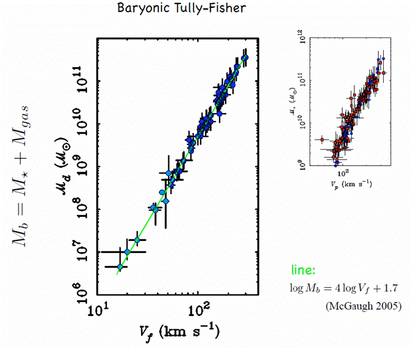

c. Which figure in the Wegner et al. paper is similar to this figure?
What is different about the one displayed here?
c. Which figure in the Wegner et al. paper is similar to this figure?
What is different about the one displayed here? f. What do we mean by "heliocentric velocity"?
f. What do we mean by "heliocentric velocity"?| Name | Common Name | R.A.(J2000) (deg) | Dec(J2000) (deg) |
cz (km/s) | N7343 | Pegasus | 339.7 | 34.0 | 6000. |
|---|---|---|---|---|
| Abell 2634 | 354.6 | 27.0 | 9400. | |
| Abell 2666 | Pegasus | 357.7 | 27.2 | 8000. |
| N 383 | Pisces | 16.9 | 32.4 | 4800. |
| N 507 | 20.5 | 33.3 | 4700. | |
| Abell 262 | 28.2 | 36.2 | 4800. | |
| Abell 347 | 36.5 | 41.9 | 5600. | |
| Abell 426 | Perseus | 49.7 | 41.5 | 5500. |
| The APPSS program will use the Baryonic Tully-Fisher relation (BTFR) to measure the distances to galaxies in the volume in and around the PPS independently of their redshifts. The diagram to the right shows an example of the BTFR from McGaugh 2005; see the ADS link. a. What is the difference between the original Tully-Fisher relation and the newer BTFR? b. How is the stellar mass calculated? c. What observable quantities do we need in order to exploit the BTFR as a distance indicator? d. Take a look at McGaugh+ 2000. We will discuss this paper at our journal club in July. |
 |